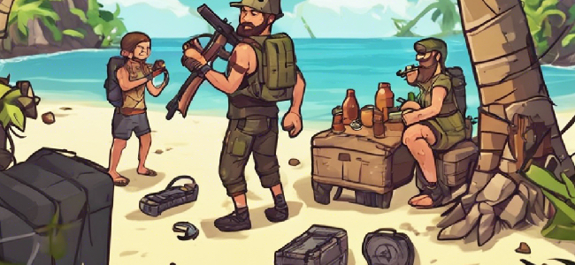
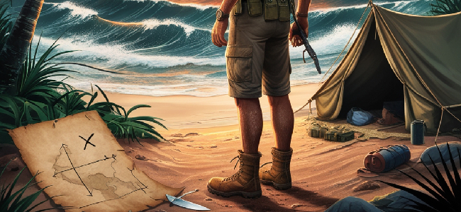

Pinup'un yeni ve heyecan verici hayatta kalma oyunu "Survival on the Island" ile adada kendi maceranızı yaşayın. Hayatta kalma becerilerinizi test edin ve adanın sırlarını keşfedin.
OynayınPinup'un "Survival on the Island" oyunu, oyuncuları heyecan verici bir tropik adada zorlu bir hayatta kalma mücadelesine davet ediyor. Adanın gizemli ve keşfedilmemiş köşelerinde hayatta kalmak için mücadele ederken, oyuncular çeşitli doğal zorluklarla karşılaşacaklar. Pinup, her oyuncunun kendini özgür hissetmesini ve maceranın tadını çıkarmasını sağlamak için detaylı bir oyun dünyası yaratmıştır. Göz alıcı manzaralar, dinamik hava koşulları ve zengin bitki örtüsü ile oyuncuların gerçek bir adada yaşadıkları hissini yaşatır. Oyun, zengin grafiklerle ve gerçekçi ses efektleriyle donatılmış olup, oyuncuları adanın kalbine çekmeyi amaçlamaktadır.
"Survival on the Island" oyununun misyonu, oyunculara gerçek bir hayatta kalma deneyimi sunmak ve onları zorlu doğa koşullarıyla başa çıkmaya teşvik etmektir. Pinup, oyuncuların stratejik düşünme becerilerini geliştirmelerini, kaynakları verimli kullanmalarını ve adadaki çeşitli tehlikelerle başa çıkmalarını sağlamak için kapsamlı bir oyun mekanizması geliştirmiştir. Oyun, adanın her köşesinde farklı görevler ve zorluklar sunarak oyunculara sürekli bir meydan okuma yaratır. Pinup'un vizyonu, oyuncuların sadece hayatta kalmakla kalmayıp aynı zamanda oyunun sunduğu derin hikaye ve karakterlerle bağ kurmalarını sağlamaktır.
Oyuncular, adada hayatta kalmak için çeşitli görevlerle karşılaşacaklar. Bu görevler, yiyecek bulmak, sığınak inşa etmek ve düşmanlarla mücadele etmeyi içerir. Her görev, oyuncuların stratejik düşünme yeteneklerini test eder ve adanın gizemlerini keşfetmeleri için yeni fırsatlar sunar.
Pinup'un "Survival on the Island" oyunu, çeşitli karakterlerle zenginleştirilmiş bir deneyim sunar. Her karakter, kendine özgü yetenekleri ve kişisel geçmişi ile oyunun hikayesine derinlik katar. Karakterler arasında liderlik becerilerine sahip, stratejik düşünme yeteneği yüksek ve savaşçı özelliklere sahip figürler bulunmaktadır. Her bir karakter, oyuncuların oyun içindeki görevleri tamamlamalarına yardımcı olacak benzersiz özelliklere sahiptir. Pinup, karakterlerin detaylı arka plan hikayelerini ve yeteneklerini dikkatle tasarlamış olup, oyunculara zengin bir rol yapma deneyimi sunar. Karakterlerin dinamik etkileşimleri ve ilişkileri, oyunun genel atmosferini ve derinliğini artırır.